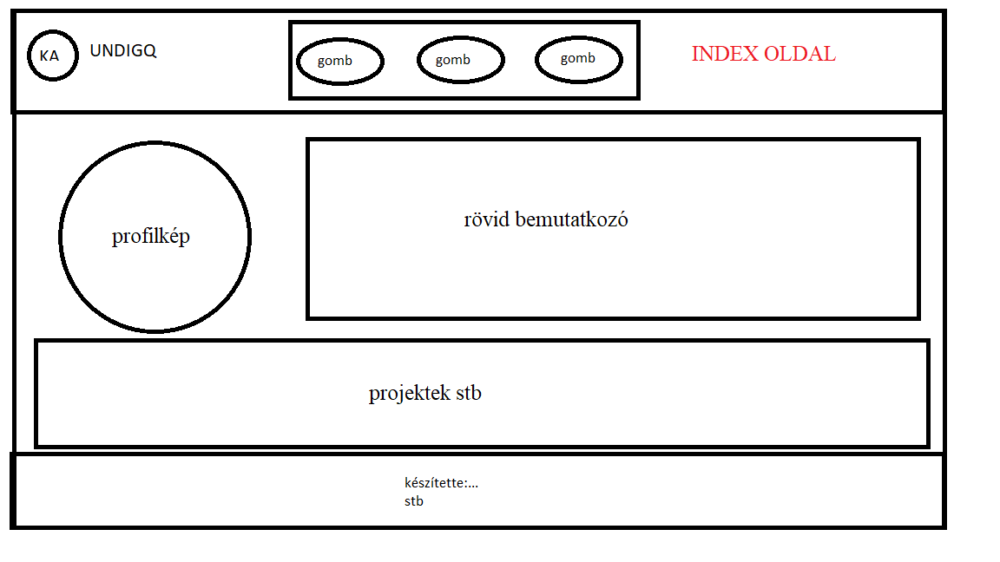
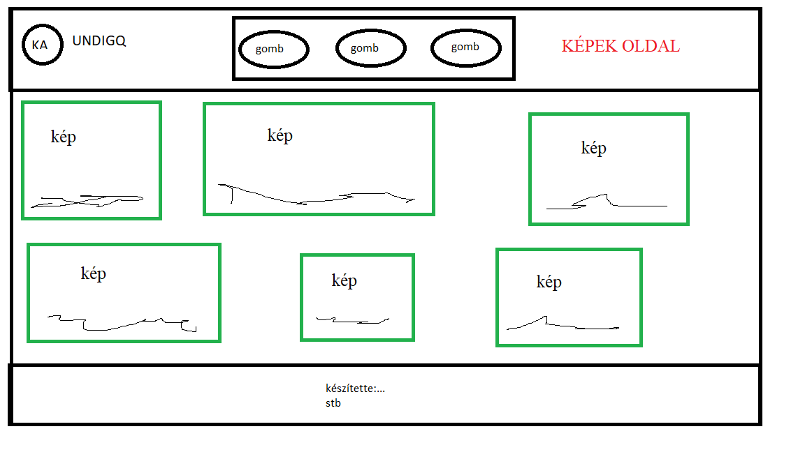
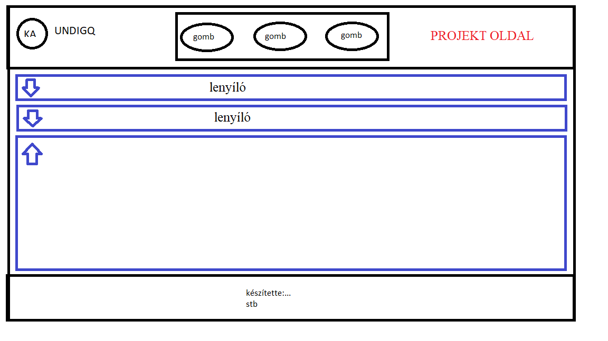
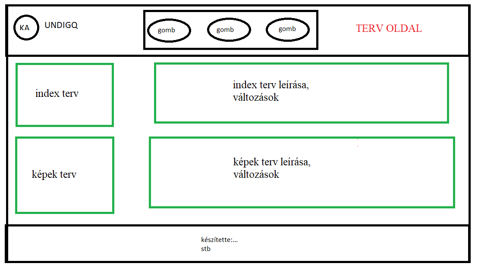

A fejléc és a lábléc minden oldalon megegyezik. Ebben benne van a menüsáv is.
Változás a rajzhoz képest, hogy 3 gomb helyett 4 gomb lett, ennek az az oka hogy 3 gomb esetén változtatni kell a gombok sorrendjét, ami kényelmetlen a felhasználónak. A másik változás hogy a logó a név és a nemtun kód lekerült a láblécbe. (A név csak akkor látszik ha rajta van az egér)

Változás a rajzhoz képest, hogy 3 gomb helyett 4 gomb lett, ennek az az oka hogy 3 gomb esetén változtatni kell a gombok sorrendjét, ami kényelmetlen a felhasználónak. A másik változás hogy a logó a név és a nemtun kód lekerült a láblécbe. (A név csak akkor látszik ha rajta van az egér)
Bal oldalt egy "profilkép", mellette és alatta egy rövid összefoglaló "rólam".Alatta egy hosszabb "részletesebb életrajz"
A profilkép szép keretezésével volt egy kis nehézségem de megoldottam.

A profilkép szép keretezésével volt egy kis nehézségem de megoldottam.
A képek oldalon vannak a képek amik kiegészítik a leírásokat vagy egyes projektmunkákat, illetve minden más a portfolióban releváns kép is.

A projekt oldalon vannak azok a munkák amikben résztvettem, egyesével lenyiló ablakban.
A lenyíló ablakban elhelyezett képek sokáig kilógtak a lenyíló ablakból, ezt a problémát nem sikerült 100% osan megoldanom.

A lenyíló ablakban elhelyezett képek sokáig kilógtak a lenyíló ablakból, ezt a problémát nem sikerült 100% osan megoldanom.
A terv oldalon megtalálhatóak az eredeti (paintben készült) látványterveim ami alapján dolgoztam és az egyes oldalak leírása.
A weboldal elkészítéséhez használt források:
-A w3schools weboldal
-A shadow box generator weboldal
-A HTML color codes weboldal